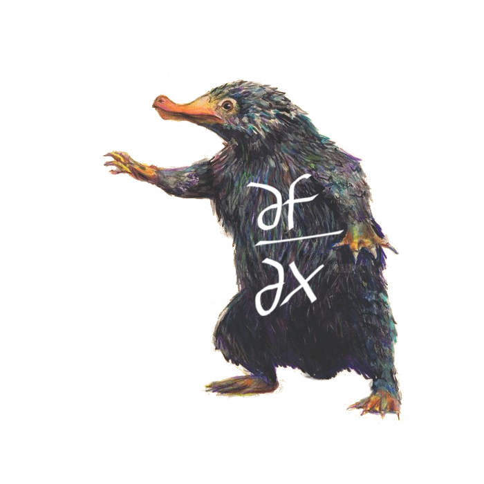

Fantastic methods and where to find them:
Automatic Differentiation



$$\frac{d}{dx}(log(x))$$
How many methods for taking derivatives by means of a computer?

(WIP)

$$ y = f(x_1,x_2) = ln(x_1) + x_1\,x_2 - sin(x_2) $$
Evaluate at (2, 5) and compute $\frac{\partial y}{\partial x_1}$

$$\frac{\partial y(2,5)}{\partial x_1} = \frac{1}{x_1} + x_2 = 5.5 $$
Calibration of 1D-diffusion equation

→ Live session!


Fouling of electrodialysis stack

Fouling of electrodialysis stack